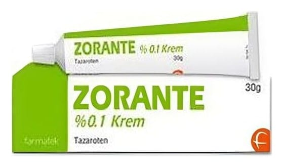

Zorante %0.1 Krem, 30 Gram

Ne için kullanılır
KT · Bölüm 1ZORANTE, 30 ve 60 g’lık alüminyum tüpte, ka rton kutu içerisinde kullanıma sunulan kremdir.
ZORANTE %0.1 krem; toplam vücut yüz ey alanının %20’sine ka da r yayılmış olan plak tipi sede f hastalığ ının harici tedavi sinde ve hafif ve or ta derecede ki sivilceli (akneli) ha staların ha rici tedavisinde kullanılmaktadır.
2. ZORANTE'yi kullanmadan önce dikkat edilmesi gerekenler ZORANTE'yi aşağıdaki durumlarda KULLANMAYINIZ Eğer, - Tazaroten ve ya ZORANTE içeriğindeki diğer maddelerde n herhangi birine karşı aşırı duyarlıysanız (alerjiniz varsa), - Sede f hastalığ ının çeşitleri olan eritrodermik (yaygın kızarıklık ke pe klenme) sedefte ve püstüler ( su toplayan) s ede fte, - Kıvrım yerlerinde (intertriginöz). - Eğer hamileyseniz, - Eğer hamile kalmayı planlıyorsanız.
ZORANTE'yi aşağıdaki durumlarda DİKKATLİ KULLANINIZ - ZORANTE’yi toplam vücut yüz ey alanının %20’sinden fazlasına u ygulamayınız. - ZORANTE’yi, yalnızca etkilenen deri bölgelerine uygulayınız. ZORANTE’nin sağlıklı, egzamatöz veya iltihaplı deriye u ygulanması tahrişe yol açabilir. - İlacın ka zara göz le temasını önlemek amacıyla uygulamada n sonra ellerinizi yıka yınız. - Sede f lezyonlarının ellerde bulunması ha linde, kremin yüz e ve ya gözlere bulaşmaması için ayrıca öz en göstermelisiniz. Yanlışlıkla göz le temas etmesi durumunda bol miktarda suyla iyice yıkayınız. - Tedavi sırasında UV ışınlara (güneş, solaryum, PUVA tedavisi veya UVB terapisi) aşırı maruz ka lmaktan kaçın ınız. Cildinizi da ha hassas ha le getirebilir ve ciddi güneş yanıklarına sebe p ol abilir. ZORANTE kullanımı süresince en az 15 SPF’li güneş koruyucu kremler kullanılmalı ve koruyucu giysiler giyilmelidir. Güneş yanı ğı olan hastalar tamamen iyileşene ka da r ZORANTE kullanmamalıdır. - ZORANTE fotosensitizan (ışı ğa duyarlılı ğı arttıran) ilaç (örn. tiazidler, tetrasiklinler, florokinolonlar, fenotiazinler, sülfonamidler) kullana n hastalarda dikkatli kullanılmalıd ır. - ZORANTE %0.1 krem sadece deriye topikal kullanım içindir. Göz, ağız ve genital mukozaya uygulanmamalıdır. Yanlışlıkla bu bölgelere temas olması halinde bol suyla yıkanarak temizlenmelidir. Uygulama sonrası eller yıkanmalıdır.
Bu uyarılar, geçmişte herhangi bir dönemde dahi olsa sizin için geçerliyse lütfen doktorunuza danışınız.
Pediyatrik p opülasyon:
18 yaşın altındaki psöriazisli hastaların ve 12 yaş altındaki akneli hastal arın tedavisinde ZORANTE kullanılmamalıdır.
ZORANTE'nin yiyecek ve iç ecek i le kullanılması:
ZORANTE’yi yiyecek ve içecek aldığınız esnada kullanabilirsiniz. ZORANTE lokal uygulanmadı ğı için bir etkileşim beklenmez.
Hamilelik
İlacı kullanmadan önce d ok torunuza veya eczacınıza danışınız.
Hamileyseniz veya hamile kalmayı düşünüyorsanız ZORANTE KULLANMAYINIZ. Doktorunuz size daha fazla bilgi verebilir. Hayva nlarda yapılan çalışmalar, anne k arnındaki be beğin zarar gördüğünü göstermiştir. Çocuk doğur ma çağ ındaki kadınlar olası risk konusunda bilgilendirilmeli ve ZORANTE tedavisi sırasında uygun doğum kontrol yöntemleri kullanmalıdır.
Tedaviniz sırasında hamile olduğunuzu fark ede rseniz ilacı uy gulamayı bırakınız ve de rhal doktorunuza danışınız.
Emzirme
İlacı kullanmadan önce d ok torunuza veya eczacınıza danışınız. Tazarotenin anne sütüne atılması ile ilgili ve ri mevcut değildir ancak ha yva nlara ilişkin ve riler, süte atılımın olası olduğunu göstermektedir. Bu ne de nle emzirme yararı ve tedavi yararı göz önünde bulundurarak emzirme veya ZORANTE kullanımına doktorunuz ka rar verecektir.
Araç ve makine kullanımı
ZORANTE tedavisinin araç veya makine kullanma ka pa sitesi üz erinde bilinen bir etkisi bulunmamaktadır.
ZORANTE'nin iç eriği nde bulunan b azı yardımcı maddeler h akkında önemli bilgiler
ZORANTE, uyarı gerektiren herhangi bir yardımcı madde içermemektedir.
Diğer i laç lar ile birlikte kullanımı
Deri üzerinde, belirgin kurutucu etkisi olan diğer preparatların eşzamanlı kullanımından kaçın ılmalıdır. Bu preparatlar be lli ilaçları (örn. de zenfektanlar) ve ayrıca kozmetik ür ünleri (örn. sabunlar ve şampuanlar) içerir. Buna karşın, söz konusu ür ünler kullanılıyor sa, ZORANTE uygulamasında n önce ve sonra bir saat beklenmesi önerilmektedir.
Eğer reçeteli ya da reçetesiz he rhangi bir ilacı şu anda kullanıyorsanız veya son zamanlarda kullandınız ise lütfen doktorunuza veya eczacınıza bunlar hakkında bilgi veriniz.
3.ZORANTE nasıl kullanılır?
Uygun k ullanım ve doz /uygulama sıklığı için t al imat lar:
ZORANTE'yi her zaman doktorunuzun anlattı ğı gibi kullanmalısın ız. Eğer emin değilseniz doktorunuza veya eczacınıza tekrar danış ınız.
ZORANTE'yi doktorunuz farklı bir şekilde önermediği takdirde psöriyazis tedavisinde, günde bir kez (akşam), etkilenen bölgeye ince bir krem tabakası ha linde uygulayınız. ZORANTE uygulamadan önce banyo ve ya duş alınmışsa cildinizi kurulayınız.
ZORANTE'yi doktorunuz farklı bir şekilde önermediği takdirde akne tedavisinde, yüz ünüzü na zikçe yıkandıktan sonra kurulayınız ve günde bir kez (akşam), etkilenen bölgeye ince bir krem tabakası halinde u ygulayınız.
Uygulama yolu ve metodu:
- Banyo veya duş sonrası, ZORANTE’yi u ygulamada n önce c ildinizi i yice kur ulayınız. - ZORANTE’yi yalnızca etkilenen de ri bölgelerine uygulayınız. Tahr işe (kaşıntı, kızarıklık, iltiha planma) yol açabileceğinden, ZORANTE sağlıklı de riye uygulanmamalıdır. - Uygulama yapılan bölgeleri kıyafet veya bandaj i le örtmeyiniz. - Tedavi elleriniz için uygulanmıyor sa, kremi uyguladıktan sonra ellerinizi yıkayınız. Kremi göz lerinize bulaştırmayınız. ZORANTE göz ünüze temas ede rse su ile iyice yıka yınız. - Önemli şekilde , ZORANTE uygulamasından önce ve ya sonra bir saat içinde cilt bakım ür ünleri ve ya kozmetik ür ünler kullanmamalısın ız. Buna karşın, söz konusu ürünleri kullanıyor sanız, ZORANTE uygulamada n önce bu preparatların de ri tarafından tamamen emildiğinden emin olunuz. - Deride tahriş oluşması durumunda, ZORANTE tedavisi sonlandırılmalıd ır. Bu durumda dermatologa veya s ize tedavi uygulayan doktora danış ınız.
Değişik yaş grupları:
Çocuklarda kullanımı: 18 yaşın altındaki psöriazisli ha staların ve 12 yaş altındaki akneli ha staların tedavisinde ZORANTE kullanılmamalıdır.
Özel kullanım durumları: Böbrek yetmezliği ve Karaciğer yetmezliği:
Böbrek yetmezliği ve karaciğer yetmezliği olan hastalarda kullanımı incelenmemiştir.
Eğer ZORANTE'nin etkisinin çok güçlü veya zayıf olduğuna dair bir izleniminiz var ise doktorunuz veya eczacınız ile konuşunuz.
Kullanmanız gerekenden d aha faz la ZORANTE kullandıysanız:
Deride doz aşımı ne de ni yle kızarıklık, soyulma ve bölgesel rahatsızlık oluşabilir. ZORANTE’nin yanlışlıkla yutulması ha linde, A vitamini aşırı alımıyla ilişkili be lirtiler oluşabilir. Bu be lirtiler şiddetli baş ağrısı, kusma, uyuşukluk, tahriş ve deride kaşıntıdır. ZORANTE’nin yanlışlıkla yutulması durumunda doktorunuzla iletişime g eçiniz.
ZORANTE yalnızca günde bir kez ha rici uygulamaya yöneliktir. Daha sık uygulama, daha hızlı veya daha i yi sonuçlar sağlamayacaktır.
ZORANTE'de n kullanmanız ge rekenden fazlasını kullanmışsanız bir doktor veya eczacı ile konuşunuz.
ZORANTE'yi kullanmayı unutursanız:
ZORANTE kullanmayı unutursanız, unutulan do zu tel afi etmeye çalışmayınız. Günde bir kez (akşam) normal uygulama programına dönünüz.
Unutulan dozları dengelemek için çift doz kullanmayınız.
ZORANTE ile tedavi sonlandırıldığındaki oluşabilecek e tkiler:
Tedavinizi sonlandırmadan önce mutlaka doktorunuza danışınız.
4.Olası yan e tkiler n elerdir?
Tüm ilaçlar gibi, ZORANTE’nin içeriğ inde bulunan maddelere duyarlı olan kişilerde yan etkiler olabilir.
Aşağıdakilerden biri olursa ZORANTE’yi kullanmayı durdurunuz ve DERHAL doktorunuza bildiriniz veya size en yakın hastanenin acil bölümüne başvurunuz: ZORANTE, ciddi yan etkilere ne de n olabilir: Deride tahriş. ZORANTE cildinizde kaşıntı, yanma, kızarıklık ve soyul maya ne den olabilir. Eğer ZORANTE kullanırken rüzgar ya da soğuk hava cildinizi daha rahatsız edici olabilir. Eğer ZORANTE cilt tahrişi belirtilerinden herhangi biri ortaya çıkarsa doktorunuza söyleyin. Doktorunuz, cildiniz iyileşene kadar ZORANTE kullanımını durdurabilir veya daha az sıklıkta kullanmanızı önerebilir.
Bunların hepsi çok ciddi yan etkilerdir. Eğer bunlardan biri sizde mevcut ise, sizin ZORANTE’ye karşı ciddi alerjiniz var demektir. Acil tıbbi müdahale veya hastaneye yatırılmanıza gerek olabilir. Bu çok ciddi yan etkilerin hepsi oldukça seyrek görülür.
Yan etkiler aşağıdaki kategorilerde gösterildiği şekilde sıralanmıştır: • Çok yaygın: 10 hastanın en az 1 'inde görülebilir. • Yaygın: 10 hastanın birinden az, faka t 100 ha stanın birinden fazla gör ülebilir. • Yaygın olmayan: 100 hastanın birinden az, faka t 1.000 hastanın birinden fazla gör ülebilir. • Seyrek: 1.000 hastanın birinden az, faka t 10.000 hastanın birinden fazla gör ülebilir. • Çok seyrek: 10.000 hastanın birinden az görülebilir. • Bilinmiyor : Eldeki verilerden tahmin edilemiyor.
Çok yaygın yan e tkiler:
Ciltte kaşıntı Yanma hissi Kızarıklık Tahriş
Yaygın yan e tkiler:
Deri soyulması Spe sifik olmayan deri döküntüsü İritan kontakt dermatit (İltihaplı temas dermatiti) Dermatit ciltte ağrı Sede fte kötüleşme Kaşıntılı iltihaplı kuru deri Cilt i nf lamasyonu (deri iltihabı) Çatlama Kana ma Lokalize ödem (bölgesel ödem)
Bilinmiyor (Eldeki verilerden t ahmin e dilemiyor):
Kabarıklık , dermatit, ürtiker, deride döküntü, uygulama bölgelerinde şişme ve ağrı. Cilt reng inde değişme ( aşırı pigment oluşumu ve az pigment oluşumu dahil)
Eğer bu kullanma talimatında bahsi geçmeyen he rhangi bir yan etki ile karşılaşırsanız doktorunuzu veya eczacınızı bilgilendiriniz.
Yan etkilerin raporlanması
Kullanma Talimatında yer alan ve ya almayan he rha ngi bir yan etki meyda na gelmesi durumunda he kiminiz, eczacınız ve ya he mşireniz ile konuşunuz. Ayrıca karşılaştığınız yan etkileri www.titck. gov.tr sitesinde yer alan "İlaç Yan Etki Bildirimi" ikonuna tıklayarak ya da 0 800 314 00 08 numaralı yan etki bildirim ha ttını arayarak Türki ye Farmakovijilans Merke zi (TÜFAM)'ne bildiriniz. Meydana gelen yan etkileri bildirerek kullanmakta olduğunuz ilacın güvenliliği hakkında daha fazla bilgi edinilmesine katkı sağlamış olacaksınız.
5.ZORANTE'nin saklanması
ZORANTE'yi ç oc uk ların göremeyeceği, erişemeyeceği yerlerde v e ambalajında saklayınız.
Açılmadan önce
ZORANTE'yi 25°C altındaki oda sıcaklığında saklayınız.
Açıldıktan sonra ZORANTE 25°C altındaki oda sıcaklığında 12 ay saklanabilir. Uygulamada n sonra tüpün kapağını sık ıca kapa tınız.
Son k ullanma tarihiyle uyumlu olarak kullanınız.
Ambalajdaki son kullanma tarihinden sonra ZORANTE'yi k ullanmayınız. Eğer üründe ve/veya a mbalajında bozukluklar fark ede rseniz ZORANTE’yi kullanmayınız.
Son kullanma tarihi geçmiş veya kullanılmayan ambalaj ları çöpe at mayınız! Çevre ve Şe hircilik Bakanlığınca belirlene n toplama sistemine v eriniz.
Ruhsat sahibi:
Farma-Tek İlaç S an. ve Tic. A.Ş.
Ümrani ye/ İstanbul
Üretim yeri:
Farma-Tek İlaç S an. ve Tic. A.Ş.
Merkez/ Kırklareli
Bu kullanma talimatı .../.../... tarihinde onaylanmıştır.